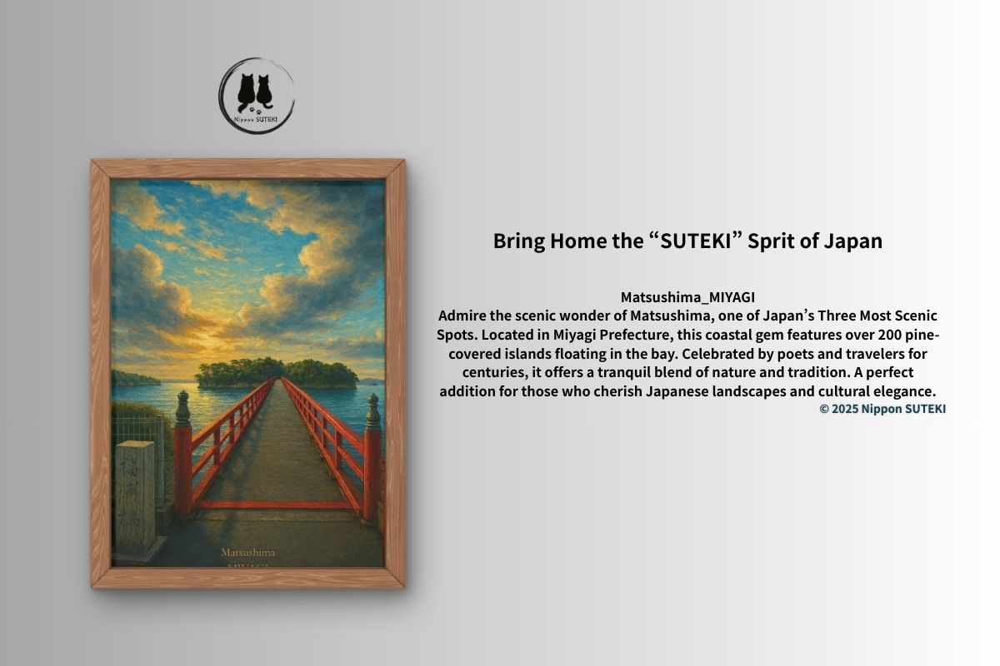

Stories Behind the Art
Small, quiet tales about Japan’s landscapes, shrines, and hidden cultural beauty.

Matsushima — Why It Became One of Japan’s Three Great Views
The history behind Nihon Sankei, 260 islands, samurai culture, and the symbolic role of Fukuura Bridge — by Kiri
Matsushima — Where Beauty Hides a Story
A quiet reflection on Fukuura Bridge, encounters, and the hidden meaning behind Matsushima’s beauty — by Sari